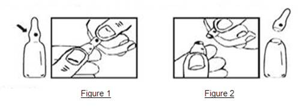

RÉSUMÉ DES CARACTÉRISTIQUES DU PRODUIT
ANSM - Mis à jour le : 23/09/2014
ARACYTINE 100 mg, poudre et solvant pour solution injectable
2. COMPOSITION QUALITATIVE ET QUANTITATIVE
Composition de la poudre
Cytarabine .................................................................................................................................. 100,00 mg
Pour un flacon de 100 mg de poudre.
Pour la liste complète des excipients, voir rubrique 6.1.
Poudre et solvant pour solution injectable.
4.1. Indications thérapeutiques
· Leucémies aiguës myéloblastiques de l'adulte et de l'enfant.
· Leucémies aiguës lymphoblastiques et localisation méningée de la maladie.
· Transformation aiguë des leucémies myéloïdes chroniques et des myélodysplasies.
4.2. Posologie et mode d'administration
Posologie
Différents schémas thérapeutiques utilisant la cytarabine ont été proposés :
Leucémies aiguës myéloblastiques et transformation aiguë des leucémies myéloïdes chroniques et des myélodysplasies :
Les posologies données en mg/m2 de surface corporelle sont utilisables chez l’adulte et l’enfant.
Induction :
Chimiothérapie d’association (toujours avec une anthracycline, parfois avec d’autres anti-néoplasiques) :
100 mg/m2 /j pendant 7 à 10 jours
Ou
200 mg/m2 /j pendant 5 à 7 jours.
Une deuxième cure peut être administrée en cas d’échec de la première.
Entretien et consolidation :
Une consolidation peut être faite avec le même protocole de chimiothérapie que celui qui a permis d’obtenir la rémission. La cytarabine peut être administrée à des doses inférieures, seule ou en association avec d’autres antinéoplasiques, par cures espacées de 4 à 6 semaines lors des traitements d’entretien.
Dans les traitements d’entretien, la voie sous-cutanée peut être utilisée : 20 mg/m2 /jour, administrés en 1 ou 2 injections pendant 5 à 10 jours.
Leucémies aiguës lymphoblastiques :
Traitement d’induction et d’entretien :
Les protocoles utilisés sont assez voisins de ceux du traitement des leucémies aiguës myéloïdes.
Ils utilisent des associations comprenant principalement : cytarabine-vincristine-prednisolone.
Traitement des localisations méningées par voie intrathécale :
A titre préventif, on propose la cytarabine : 20 mg/m2, parfois associée au méthotrexate et à l’hydrocortisone.
Pour l’enfant de moins de 3 ans, la dose de cytarabine est de 30 mg/m2.
A titre curatif, on utilise habituellement la dose de 20 mg/m2 une à deux fois par semaine.
L’alcool benzylique ne doit pas être utilisé pour la reconstitution de la solution dans le cas d’une administration intrathécale.
ADAPTATION POSOLOGIQUE :
· La fréquence des cures est fonction du résultat thérapeutique et de la toxicité hématologique et extra-hématologique.
· Des contrôles répétés, sanguins et médullaires devront être effectués, surtout en début de traitement. Les fonctions hépatiques et rénales seront également surveillées.
· L’adaptation de la posologie se fait en fonction des résultats des examens sanguins et médullaires (myélogramme).
· Habituellement le traitement est interrompu si :
o Les plaquettes sont inférieures à 50 000/mm3,
o Les polynucléaires neutrophiles sont inférieurs à 1 000/mm3.
· La reprise du traitement se fait dès que les chiffres des numérations le permettent et dès que les cellules blastiques réapparaissent dans le sang ou dans la moelle. Le fait d’attendre la normalisation de la numération pour reprendre le traitement est préjudiciable au contrôle ultérieur de la maladie.
· Les posologies seront aussi modifiées en cas de phénomènes toxiques autres qu’hématologiques et en cas d’association à d’autres agents chimiothérapiques.
MODE D’ADMINISTRATION
La cytarabine peut être utilisée par différentes voies d'administration.
· Voie intraveineuse en injection directe ou en perfusion continue : lorsque la cytarabine est administrée rapidement, les doses injectées peuvent être plus importantes que celles qui le seraient par perfusion lente; ceci est dû à l'inactivation rapide du produit et à sa durée de contact très courte avec les cellules néoplasiques et normales sensibles.
· Voie sous-cutanée : la cytarabine est particulièrement bien tolérée. On observe très rarement douleur et inflammation au point d'injection.
· Voie intrathécale : la cytarabine est utilisée dans le traitement préventif et curatif des localisations méningées des leucémies aiguës lymphoblastiques de l'enfant.
En cas d'utilisation par voie intrathécale, la reconstitution se fait avec du L.C.R. autologue ou avec une solution de chlorure de sodium isotonique ; l'utilisation doit être immédiate.
L’alcool benzylique ne doit pas être utilisé pour la reconstitution de la solution dans le cas d’une administration intrathécale.
Quelle que soit la voie d'administration, l'expérience clinique acquise suggère que les résultats obtenus par la cytarabine dépendent étroitement des modifications posologiques de façon à détruire le plus de cellules blastiques avec le moins d'effet toxique. Une association polychimiothérapique entraîne des modifications de posologie pour chacun des constituants du protocole.
Modalités de manipulation :
La préparation des solutions injectables de cytotoxiques doit être obligatoirement réalisée par un personnel spécialisé et entraîné ayant une connaissance des médicaments utilisés, dans des conditions assurant la protection de l’environnement et surtout la protection du personnel qui manipule. Elle nécessite un local de préparation réservé à cet usage. Il est interdit de fumer, de manger, de boire dans ce local. Les manipulateurs doivent disposer d’un ensemble de matériel approprié à la manipulation, notamment blouses à manches longues, masques de protection, calot, lunettes de protection, gants à usage unique stériles, champs de protection du plan de travail, conteneurs et sacs de collecte des déchets. Les excréta et les vomissures doivent être manipulés avec précaution. Les femmes enceintes doivent être averties et éviter la manipulation des cytotoxiques. Tout contenant cassé doit être traité avec les mêmes précautions et considéré comme un déchet contaminé. L’élimination des déchets contaminés se fait par incinération dans des conteneurs rigides étiquetés à cet effet.
Ces dispositions peuvent être envisagées dans le cadre du réseau de cancérologie (circulaire DGS/DH/98 n°98/188 du 24 mars 1998) en collaboration avec toute structure adaptée et remplissant les conditions requises.
Instruction pour une ouverture correcte des ampoules :
Important : l’ampoule est prélimée en un point de l’étranglement. La tâche colorée sur l’olive permet l’orientation de celle-ci (figure 1). Saisir l’ampoule, le point coloré dirigé vers soi, l’ampoule s’ouvre facilement en plaçant le pouce sur le point coloré et en exerçant une légère flexion du haut vers le bas (figure 2). Ne pas ouvrir l’ampoule au niveau du trait.

· Hypersensibilité à la cytarabine.
· Celles communes à toute thérapeutique cytotoxique.
· Aplasie médullaire préexistante.
· Encéphalopathies dégénératives et toxiques, notamment après emploi du méthotrexate ou de traitement par les radiations ionisantes.
· Patients avec une infection méningée évolutive.
· Allaitement (voir rubrique 4.6).
· Association avec le vaccin antiamarile (fièvre jaune) (voir rubrique 4.5).
· Le solvant à base d’alcool benzylique ne doit pas être utilisé pour la reconstitution de la solution dans le cas d’une administration intrathécale. Dans les autres cas, la solution reconstituée avec ce solvant est contre-indiquée chez les nouveau-nés.
4.4. Mises en garde spéciales et précautions d'emploi
La cytarabine doit être administrée sous stricte surveillance médicale en particulier au cours du traitement d'induction : on pratiquera de façon répétée une numération de la formule sanguine, examens médullaires (myélogramme) afin d'apprécier les résultats thérapeutiques et la toxicité hématologique du traitement.
La cytarabine est un puissant myélosuppresseur : Elle peut entrainer une hypoplasie ou une aplasie médullaire dont la sévérité dépend de la dose administrée et du schéma thérapeutique utilisé.
Insuffisance médullaire préexistante : la cytarabine peut être administrée en cas de nécessité absolue.
Le traitement doit dans ce cas être initié avec prudence.
Les patients recevant ce traitement doivent être placés sous surveillance médicale stricte.
Pendant la phase d’induction une numération des globules blancs et des plaquettes doit être réalisée quotidiennement. Des examens médullaires doivent être réalisés fréquemment une fois que les cellules blastiques ont disparu du sang périphérique.
Il conviendra de considérer la possibilité de suspendre ou de modifier le traitement lorsque l’insuffisance médullaire médicamenteuse entraine une réduction du nombre de plaquettes à moins de 50 000 ou de polynucléaires neutrophiles à moins de 1000/mm3. Il se peut que le nombre d’éléments figurés continue à diminuer après l’arrêt du traitement pour atteindre les valeurs les plus basses après une période sans traitement de 12 à 24 jours. Si cela est indiqué, la reprise du traitement peut se faire lorsque des signes nets de réparation médullaire apparaissent.
Un équipement spécial doit être disponible afin de pouvoir gérer les complications, potentiellement fatales de l’insuffisance médullaire (infections résultant d’une granulopénie et autre diminution des défenses de l’organisme, hémorragies secondaires à la thrombopénie).
On surveillera les fonctions hépatiques et rénales. Les patients ayant une insuffisance hépatique ou rénale présentent un risque plus important de toxicité sur le système nerveux central après administration de fortes doses de cytarabine. Il faudra donc utiliser le produit avec précaution en réduisant les doses chez les patients atteints d’insuffisance hépatique et rénale.
Syndrome de lyse tumorale : Comme toute chimiothérapie antileucémique, la cytarabine induit une hyperuricémie secondaire à la lyse cellulaire : on surveillera le taux d'acide urique pendant le traitement et on préviendra l'hyperuricémie.
Les patients recevant des doses élevées de cytarabine doivent être suivis afin de détecter des signes de neuropathie, car il peut être nécessaire de modifier le schéma d’administration et les doses pour éviter des troubles neurologiques irréversibles (voir rubrique. 4.8).
La vaccination avec un vaccin vivant doit être évitée chez les patients recevant de la cytarabine (voir rubrique 4.5).
L’association de ce médicament est déconseillée avec la phénytoïne (et par extrapolation la fosphénytoïne) (voir rubrique 4.5).
Femmes en âge de procréer traitées (voir rubrique 4.6) :
Les femmes en âge de procréer traitées par la cytarabine doivent utiliser un moyen de contraception efficace au cours du traitement et un mois après la fin du traitement.
Hommes traités (voir rubrique 4.6) :
Il est souhaitable que les hommes traités par la cytarabine ou leur partenaire utilisent une méthode contraceptive de manière à éviter une conception pendant le traitement du patient et dans les 3 mois suivant la fin du traitement.
Les patients traités doivent être avertis de la nécessité de consulter en vue d’une conservation de sperme préalablement au traitement, en raison de la possibilité d’atteinte de la fertilité.
Une ampoule de solvant de 5 ml contient 47,25 mg d’alcool benzylique.
Ce solvant ne doit pas être utilisé pour la reconstitution de la solution dans le cas d’une administration intrathécale.
Dans les autres cas, la solution reconstituée avec ce solvant peut provoquer des réactions toxiques et des réactions de type anaphylactoïde chez les nourrissons et les enfants jusqu’à 3 ans.
Voie intrathécale : La cytarabine, lorsqu'elle est administrée par voie intrathécale, peut être associée à des nausées, des vomissements et à une grave toxicité du système nerveux central qui peut aboutir à un déficit permanent, incluant une cécité et d'autres toxicités neurologiques.
Il est recommandé de ne pas dépasser la dose individuelle validée et d’être très prudent chez les patients ayant déjà reçu un traitement radiothérapique ou intrathécal. Voir rubrique 4.8.
4.5. Interactions avec d'autres médicaments et autres formes d'interactions
Interactions médicamenteuses :
En raison de l’augmentation du risque thrombotique lors des affections tumorales, le recours à un traitement anticoagulant est fréquent. La grande variabilité de la coagulabilité au cours de ces affections, à laquelle s’ajoute l’éventualité d’une interaction entre les anticoagulants oraux et la chimiothérapie anticancéreuse, impose, s’il est décidé de traiter le patient par anticoagulants oraux, d’augmenter la fréquence des contrôles de l’INR (acénocoumarol, fluindione, phénindione, tioclomarol, warfarine).
Interactions communes à tous les cytotoxiques :
Association contre-indiquée (voir rubrique 4.3) :
+ Vaccin antiamarile (fièvre jaune) : risque de maladie vaccinale généralisée mortelle.
Associations déconseillées (voir rubrique 4.4) :
+ Phénytoïne (et, par extrapolation, fosphénytoïne) : risque de survenue de convulsions par diminution de l’absorption digestive de la seule phénytoïne par le cytotoxique, ou bien risque de majoration de la toxicité ou de perte d’efficacité du cytotoxique par augmentation de son métabolisme hépatique par la phénytoïne ou la fosphénytoïne.
+ Vaccins vivants atténués (sauf antiamarile) : risque de maladie vaccinale généralisée éventuellement mortelle. Ce risque est majoré chez les sujets déjà immunodéprimés par la maladie sous-jacente.
Utiliser un vaccin inactivé lorsqu’il existe (poliomyélite).
Associations faisant l'objet de précautions d’emploi :
+ Antivitamines K :
Augmentation du risque thrombotique et hémorragique au cours des affections tumorales. De surcroît, possible interaction entre les AVK et la chimiothérapie.
Contrôle plus fréquent de l'INR.
Association à prendre en compte :
+ Immunosuppresseurs : immunodépression excessive avec risque de syndrome lymphoprolifératif.
Les femmes en âge de procréer traitées par la cytarabine doivent utiliser un moyen de contraception efficace au cours du traitement et un mois après la fin du traitement.
Compte tenu des données disponibles, la cytarabine ne sera administrée pendant la grossesse que si la pathologie met en jeu le pronostic vital de la mère. En effet, les études sur les fonctions de 7/7 reproduction réalisées chez différentes espèces animales ont montré que la cytarabine est embryotoxique et a des effets tératogènes principalement sur le cerveau et le squelette.
Quelques cas de malformations congénitales des membres et de l’oreille externe ont été rapportés lors de l’exposition au premier trimestre de grossesse. En cas d’exposition au premier trimestre, une surveillance échographique orientée est donc recommandée.
Des cas de prématurité ou de retard de croissance intra-utérin ont été signalés.
A la naissance, la survenue d’ictère, d’insuffisance médullaire et d’hyperéosinophilie transitoires a été rapportée. Une surveillance biologique est donc indiquée dans les premières semaines de vie.
Allaitement
L’excrétion de la cytarabine dans le lait maternel n’est pas connue. En raison des effets indésirables potentiellement graves pouvant être entrainés par la cytarabine chez les enfants allaités, la prise de cytarabine doit être contre-indiquée au cours de l’allaitement.
Fertilité
La cytarabine est mutagène et peut induire une atteinte chromosomique des spermatozoïdes.
Les patients traités doivent être avertis de la nécessité de consulter en vue d’une conservation de sperme préalablement au traitement, en raison de la possibilité d’atteinte de la fertilité.
Il est souhaitable que les hommes traités par la cytarabine ou leur partenaire utilisent une méthode contraceptive de manière à éviter une conception pendant le traitement du patient et dans les 3 mois suivant la fin du traitement.
4.7. Effets sur l'aptitude à conduire des véhicules et à utiliser des machines
Dans de rares cas, une hyperuricémie secondaire à la lyse blastique peut être induite par le traitement à la cytarabine; il sera donc nécessaire de surveiller le taux d'acide urique dans le sang et les urines.
Affections cardiaques :
Péricardite.
Des cas de cardiomyopathie pouvant être fatale ont été rapportés suite à l’utilisation expérimentale d’un traitement associant de fortes doses de cytarabine et du cyclophosphamide utilisé dans le cadre de transplantation médullaire.
Affections hématologiques et du système lymphatique :
La cytarabine est un agent antinéoplasique qui entraîne une myélodépression. Son administration entraîne donc une aplasie ou une hypoplasie médullaire responsable d'anémie, granulopénie, thrombopénie, mégaloblastose et chute du taux de réticulocytes.
La sévérité de l'aplasie dépend de la dose administrée et du schéma thérapeutique utilisé. En relation avec l'aplasie, des complications hémorragiques ou infectieuses graves peuvent venir compliquer secondairement la cure de chimiothérapie.
Des infections virales, bactériennes, fongiques, parasitaires et saprophytiques peuvent être associées à l’utilisation de la cytarabine seule ou en association avec d’autres médicaments immunosuppresseurs affectant l’immunité cellulaire ou humorale. Ces infections peuvent être légères, mais elles peuvent aussi être graves et parfois fatales.
Affections du système nerveux :
Toxicité neurocérébelleuse pour de fortes doses.
Atteintes cérébelleuses sous forme, au minimum, de dysarthrie et d’un nystagmus, au maximum d’une grande ataxie qui peut être d’apparition retardée et être définitive. Des épisodes de comas, des troubles du comportement et des neuropathies périphériques sensitives et motrices, ont aussi été rapportés. Des cas graves voire létaux ont été observés chez des malades ayant déjà reçu antérieurement d’autres traitements sur le système nerveux central (irradiation encéphalique) : on recommande de ne pas dépasser la dose individuelle validée et on sera très prudent chez les patients ayant déjà reçu un traitement radiothérapique ou intrathécal.
La toxicité neurologique semble en rapport avec un débit rapide d’administration.
Affections oculaires :
Des atteintes réversibles de la cornée et des conjonctivites hémorragiques ont été décrites après utilisation de fortes doses de cytarabine. Ces phénomènes peuvent être prévenus ou diminués par l'instillation d'un collyre contenant des corticoïdes.
Affections respiratoires, thoraciques et médiastinales :
Une toxicité pulmonaire grave, parfois fatale, des syndromes de détresse respiratoire et des œdèmes pulmonaires ont été rapportés après utilisation de fortes doses de cytarabine.
De rares cas de pneumopathies interstitielles ont été rapportés chez des patients traités avec des doses intermédiaires de cytarabine associée ou non à d’autres agents de chimiothérapie, sans que cela ait pu être associé de façon claire à la cytarabine.
Affections gastro-intestinales :
Nausées, vomissements, anorexie sont fréquents avec l’utilisation de la cytarabine, d’autre part risque de stomatite et de mucite. Les nausées et vomissements sont plus fréquents à la suite d’une perfusion rapide. Quelques rares cas d’ulcérations gastro-intestinales sévères avec perforation et péritonite, nécrose intestinale ont été décrits.
Des cas de pancréatite aigüe ont été rapportés chez des patients traités avec de la cytarabine en association avec d’autres médicaments.
Affections des reins et des voies urinaires :
Insuffisances rénales et rétentions urinaires.
Affections de la peau et du tissu sous-cutané :
Rashs cutanés ou dermites exfoliatives.
Alopécie totale.
Ulcérations cutanées.
Troubles généraux et réactions au site d’administration :
Thrombophlébites et cellulites au point d’injection.
Poussées fébriles.
Affections du système immunitaire :
Dans de rares cas : Syndrome cytarabine qui se caractérise par élévation thermique, myalgies, douleurs osseuses accompagnées dans certains cas par des douleurs thoraciques, rashs maculopapuleux, conjonctivite et sensation de malaise général. Ce syndrome survient 6 à 12 heures après l'administration du produit.
Son traitement et sa prévention répondent aux corticoïdes.
Réactions anaphylactiques :
Œdème allergique.
Affections hépato-biliaires :
Abcès hépatique et altération fonctionnelle hépatique avec élévation de la bilirubine.
Ictère.
Affections des organes de reproduction et du sein :
Aménorrhée, azoospermie.
Effets secondaires et toxicité de la voie intrathécale de la cytarabine :
Les effets les plus fréquemment rapportés après administration par voie intrathécale sont des nausées, des vomissements et de la fièvre. Ces réactions sont légères.
Des accidents de neurotoxicité graves dont des paraplégies ont été rapportés lors d’administrations intrathécales combinées avec du méthotrexate et des corticostéroïdes et lors d’association d’injection intrathécale avec une administration systémique de fortes doses de méthotrexate et de cytarabine.
Des cas de leucoencéphalites nécrosantes avec ou sans convulsion ont été rapportés. Certains de ces patients ont aussi été traités par méthotrexate et/ou hydrocortisone par voie intrathécale et par irradiation encéphalique.
Deux cas de cécité ont été décrits chez des sujets mis en rémission après polychimiothérapie intraveineuse et traitement préventif des greffes méningées avec cytarabine intrathécale et radiothérapie de l'encéphale.
Déclaration des effets indésirables suspectés
La déclaration des effets indésirables suspectés après autorisation du médicament est importante. Elle permet une surveillance continue du rapport bénéfice/risque du médicament. Les professionnels de santé déclarent tout effet indésirable suspecté via le système national de déclaration: Agence nationale de sécurité du médicament et des produits de santé (Ansm) et réseau des Centres Régionaux de Pharmacovigilance www.ansm.sante.fr.
Il n'existe pas d'antidote spécifique. La dose de 4,5 g/m2 en perfusion IV d'une heure toutes les 12 heures en 12 doses provoque une toxicité du système nerveux central irréversible et létale.
5. PROPRIETES PHARMACOLOGIQUES
5.1. Propriétés pharmacodynamiques
Classe pharmacothérapeutique : Agents Antinéoplasiques – Antimétabolites – Analogue de la pyrimidine
Code ATC : L01BC01
Antimétabolite spécifique de la phase S du cycle cellulaire (phase de division cellulaire).
La cytotoxicité de la cytarabine dépend de son métabolite actif l'ARA-CTP qui incorporé à l'ADN en bloque la synthèse. La molécule d'ADN comprenant de l'ARA-CTP présente des anomalies structurales aboutissant à des perturbations du métabolisme cellulaire et altérant sa reproduction. La cytotoxicité passerait aussi par une inhibition de l'ADN polymérase et par une action sur le système des kinases.
L'utilisation de hautes doses de cytarabine a montré qu'elles permettent de vaincre la résistance des cellules leucémiques ne répondant plus aux doses conventionnelles du produit.
Plusieurs mécanismes semblent intervenir pour vaincre cette résistance :
· augmentation de la quantité de substrat,
· augmentation du pool intracellulaire d'ARA-CTP: il existe une corrélation positive entre la rétention intracellulaire d'ARA-CTP et le pourcentage de cellules en phase S.
5.2. Propriétés pharmacocinétiques
Pharmacocinétique de la cytarabine utilisée à haute dose : la pharmacocinétique de la cytarabine à haute dose (H.D ARA C) est bicompartimentale (modèle à 2 compartiments).
Après administration intraveineuse d'une dose de 2 à 3 g/m² toutes les 12 heures en perfusion d'une heure sur 5 à 6 jours (10 à 12 doses), les concentrations plasmatiques en fin de perfusion sont de l'ordre de : 19,96 + 8,02 µg/ml et 35 + 2,8 µg/ml. Les concentrations plasmatiques décroissent à l'arrêt de la perfusion, selon une courbe biexponentielle. Six heures après la fin de la perfusion les concentrations obtenues correspondent à celles mesurées au "steady-state" après une perfusion continue de 24 heures de 100 mg / m² de cytarabine.
Par comparaison avec la cinétique de la cytarabine à dose conventionnelle, les hautes doses produisent un pic 200 fois supérieur.
De même le pic d'apparition d'ARA-U métabolite inactif est retardé avec les hautes doses puisqu'il n'apparaît qu'au bout de 15 minutes.
Aux doses conventionnelles :
· la T ½ est de l'ordre de quelques minutes (10 en moyenne),
· la T ½ B est de l'ordre de quelques heures (1 à 3).
Liaison aux protéines : 14 % de la cytarabine environ est lié aux protéines plasmatiques.
Clairance rénale plus lente avec les hautes doses, de l'ordre de 232 + 33,4 ml/min/m².
La cytarabine administrée par voie générale (IV) passe la barrière hémato-encéphalique : après une dose de 1 à 3 g/m² en perfusion de 1 à 3 heures, les concentrations dans le liquide céphalo-rachidien sont de l'ordre de 100 à 300 ng/ml.
Le produit diffuse aussi dans la salive, la rate, les reins, le tube digestif, le thymus, la moelle osseuse et les larmes. On ne sait pas si la cytarabine passe dans le lait maternel.
Activation de la cytarabine en ARA-CTP métabolite actif :
Passage de la membrane cellulaire par une diffusion facilitée selon le gradient de concentration à haute concentration, par un mécanisme utilisant un transporteur à faible concentration.
Activation enzymatique par phosphorylations successives : les enzymes qui activent l'ARA-C sont celles qui assurent l'activation du ribonucléoside naturel, la déoxycytidine.
Deux enzymes jouent un rôle important : déoxycytidine kinase (ARA-C ® ARA-CMP) et déoxycytidilate kinase (ARA-CMP ® ARA-CDP).
Le métabolite actif formé est l'ARA-CTP (arabinofuranosylcytosine tri-phosphate). La formation de l'ARA-CTP est une condition nécessaire à la cytotoxicité du produit mais n'est semble-t-il pas la seule : d'autres mécanismes interviennent.
Catabolisme :
La cytarabine est dégradée en ARA-U (arabinofuranosyl uracile), métabolite inactif, par la cytidine déaminase, enzyme présente dans de nombreux tissus mais principalement dans le foie et aussi dans les cellules leucémiques et la moelle. Cette enzyme est la cible de nombreux phénomènes d'activation ou d'inhibition.
5.3. Données de sécurité préclinique
Aucune étude de fertilité n'a été réalisée, mais des effets sur la fertilité mâle ont été rapportés chez la souris. La cytarabine est embryotoxique et tératogène (cerveau et squelette) et est responsable d’une toxicité péri- et post-natale chez de nombreuses espèces. Administrée à des rats nouveau-nés à la dose de 4mg/kg/j, la cytarabine a provoqué des retards de développement.
La cytarabine est mutagène et clastogène.
Aucune étude de cancérogenèse n'a été réalisée.
Solvant: alcool benzylique, eau pour préparation injectable.
Il existe une incompatibilité physico-chimique de la cytarabine avec l'héparine, l'insuline, le 5-fluoro-uracile, la nafcilline, l'oxacilline, la pénicilline G, le solu-B (solution injectable de vitamines du groupe B, vitamines C et PP) et l'hémisuccinate de méthylprednisolone.
ARACYTINE ne doit pas être mélangé avec d'autres médicaments à l'exception de ceux mentionnés dans la rubrique 6.6. S'assurer de la compatibilité avant de le mélanger ou de l'associer à toute autre substance.
Après reconstitution : voir rubrique 6.4.
6.4. Précautions particulières de conservation
Après reconstitution: 48 heures à température inférieure à 25°C
6.5. Nature et contenu de l'emballage extérieur
Poudre:
Flacon en verre incolore de type I de 10 ml fermé par un bouchon en caoutchouc bromobutyle.
Solvant:
Ampoule en verre incolore de type I de 5 ml.
6.6. Précautions particulières d’élimination et de manipulation
Ne pas utiliser une solution dans laquelle un léger trouble serait apparu.
7. TITULAIRE DE L’AUTORISATION DE MISE SUR LE MARCHE
PFIZER HOLDING FRANCE
23-25, AVENUE DU DOCTEUR LANNELONGUE
75014 PARIS
8. NUMERO(S) D’AUTORISATION DE MISE SUR LE MARCHE
· 553 151-2 ou 34009 553 151 2 4 : flacon de 10 ml (verre incolore) de poudre pour solution injectable -ampoule de 5 ml (verre incolore) de solvant, boîte de 25.
9. DATE DE PREMIERE AUTORISATION/DE RENOUVELLEMENT DE L’AUTORISATION
[à compléter par le titulaire]
10. DATE DE MISE A JOUR DU TEXTE
[à compléter par le titulaire]
Sans objet.
12. INSTRUCTIONS POUR LA PREPARATION DES RADIOPHARMACEUTIQUES
Sans objet.
Liste I.